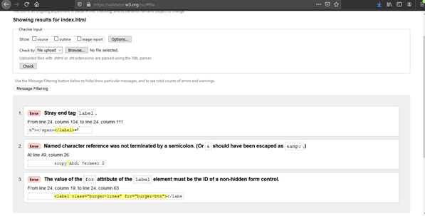

01.Overall experience
My current experience at the university has been very good so far. The current situation with the pandemic going on has increased the difficulty of learning as it is harder to focus in the hoem instead of an actual learning enviroment. Despite all of those issues i am having fun learning all the various content from the lessons. Making friends in these times has been hard as well, thankfully we have technology such as discord which enabled me to form a group succesfully.
02.My Module Experience
Learning web development has been a great experience so far, i am getting th hang of HTML and can confidently create pages such as this one, throughout the course i have had some difficult times such as when bugs and errors occur but most are easily fixed and if not i could always ask for help. Learning CSS has also been amazing as the more lessons we went through you could see how much freedom in creation there was when using CSS.
03.Design and user interface
Colour scheme
The website i developed has a simple yet effective design scheme such as the use of a dark colour scheme
which utilises colours such as black and grey backgrounds with white text to be easily read by users and
also including yellow for some nice contrast with the rest of the colours, the inspiration for this colour
scheme came from coolors.co which generates random colour schemes.
Navigation Bar
The Navigation bar consists of 4 navigation links to move around the site these are positioned on the top
right of the screen. The Logo instead is positioned to the top left side of the screen at all times, this
splits the logo from the navigation links making it stand out more and makes it easier to remember as it's
clearly visible. When displaying the website on a mobile device the navigation links are hidden in a
hamburger menu in the top right of the screen in order to reduce the amount of content blocking the screen.
Index Page
The index page includes a short animation that types out my opening line, it's good as it's not overly
flashy and gets to the point while still keeping the users interest. Also on the index page is the button to
be able to ge to this report it is coloured yellow to make it clearly stand out on the page.
04.Website development
The development of the website started off with just creating basic website templates consisting of just text
with no styling,this was done with easily and without errors. After that I began to work on the css styling
for each page individually this is where problems began to arise, things such as the breaking point of the
website not functioning correctly causing css styling to dissapear completely if the window was at certain
resolutions or having a class for certain elements in the page that would only work in one of the three
resolutions but not the other therefore neeeding seperate classes for each resolution. Sometimes having
fixed one issue would end up causing another issue somewhere else. Most of the issues were fixed by using
the inspect element feature on the web browser so i could actively change it and see if the problem was
fixed before writing the code in the editor
05.Website Validation
I validated my website many times using the website validator.w3.org, there i could see errors from code that
was missing lines or even th simple mistakes such as leftover curly brackets from deleted code.
Error

Solved
To solve this i had to go through mhy code and make sure the semi-colon was put in the right places as well as checking my class names.
Contact Page Error
Contact Page Solved
This page included some warnings but they were about the comments so nothing needs to be fixed as it doesn't affect the output
CV Page Error

CV Page Fixed
To fix this page I had to remove an accidental tag that was auto placed by VSC.